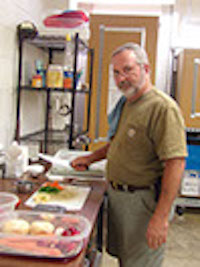
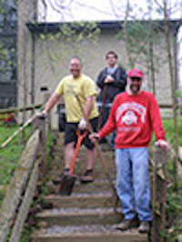
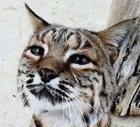
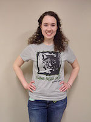
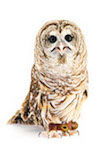
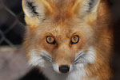
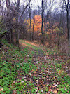
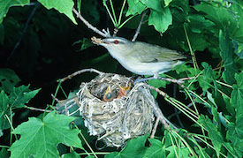
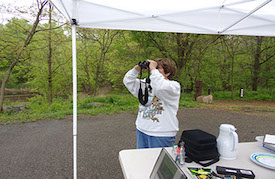
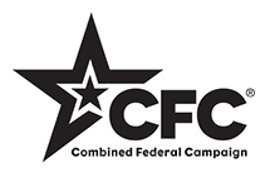

Brukner Nature Center is a privately funded non-profit organization promoting the appreciation and understanding of wildlife conservation through preservation, education,
and rehabilitation. We receive no tax dollars but our Interpretive Building and trails are open to the public. We rely on contributions and grants to fulfill our mission.
Please consider making a contribution to support us today!
Leave a Legacy
In order to continue our mission, we need financial long-term financial assistance from people like you. By leaving a legacy through a gift in your will, you can continue
to help us reach our goals far into the future. Your gift is a lasting tribute.
Make a Memorial Contribution
To honor a loved one with a contribution in their name, simply download our BNC Memorial Form, and return it with a check payable to Brukner Nature Center.
Opportunities
We need your help!
Volunteers form the backbone of Brukner Nature Center. We could not possible reach all of our goals without your support. We have opportunities for all ages, skill
levels and interests. From mowing grass to baking cookies to leading school groups...come join our family today!
We are looking for dynamic, energetic individuals searching for that stepping stone into the environmental world. Brukner Nature Center offers a six month internship
program for qualified indivduals. For detailed information please go to the link below.


Support the wildlife ambassadors at Brukner Nature Center by eating out!
Did you know that it costs over $1,000 every year just to feed our 50 permanent wildlife ambassadors? From mealworms for the spotted salamanders to Zupreme for the bobcat, it all adds up. So take your family and friends out to eat each
month and support Brukner nature Center!

If you plan to shop online during the upcoming holiday season, consider going through www.GoodShop.com. By choosing Brukner Nature Center, you can have a portion of each online sale you make at participating merchants donated
to us with no additional cost to you. Many merchants also offer GoodShop exclusive discounts and coupon codes that can be used to help you save money on your purchases. If you travel and make your own reservations online, many travel-related
companies also participate with GoodShop. You can even download a toolbar that will help you remember to shop through GoodShop. How much can you give to Brukner without giving?
Shop our Nature Shop!
We have a variety of items for sale ranging from a quarter and up! Make great gifts for birthday grab bags & Christmas stocking stuffers. Wide variety of birdhouses and field guides. Check us out!
Purchase a BNC T-shirt!
Youth t-shirts are available in "aluminum gray" with rust orange type.
Sizes for youth t-shirts are small - large
Adult t-shirts are available in "aluminum gray" with olive green type.
Sizes for adult shirts are small - xxlarge
All shirts are $20 each
Did you know that it takes 8 recycled water bottles to make each t-shirt?

Need a Nature Book?
We would be happy to order one for you! Just let us know the title and author and we’ll place the order. Books are received within 2 weeks and your purchase helps support our mission! Payment must be received prior to ordering.
Adopt an Animal
Are you looking for a gift for the person who has everything?
When you participate in the Adopt-an-Animal program at Brukner Nature Center, your donation helps to pay for the food and husbandry that our resident wildlife need to survive, from individualized diets to specialized cage improvements
and daily enrichments.
We have adoption levels ranging from $25 - $200 based on the animal you choose to adopt!

Adopt a release box
Our wildlife rehab patients need your help!
Your support of our "Adopt-a-Release Box" program will help us to continue to provide hundreds of wildlife rehab patients with the support they need as they return to the wild. Animals such as Virginia opossums and eastern gray squirrels
are provided a release box to help stimulate a natural environment that provides shelter from predators and weather, as well as, a place to rest.
All release box donations are $20.

Adopt a Tree
Help us plant native trees at BNC’s River’s Edge Wildlife Preserve!
For a simple donation, you can help us purchase and plant a variety of native trees in prime locations, creating a welcoming entrance and future shade for weary hikers! Each donor or recipient will receive a certificate of appreciation
suitable for framing.
You can even ‘plant a tree for the future’ in memory or honor of a loved one!

All adoptions will receive a certificate featuring a photo of your adopted Wildlife Ambassador or our Release Box Ambassador. A certificate will be ready for pick-up or mailed to recipient in 3 - 5 days.
PLEASE NOTE: if purchasing an adoption for Christmas, we will need adoption forms by December 19.
Wildlife Rehab:
Disposable non-latex exam gloves (size M/L), bath towels (please, no holes or frayed edges), Cheerios (plain), cottonballs, Timothy hay, fresh fruit & vegetables, moist & dry cat food, dry dog food, poultry grower & finisher
(16% protein), saline solution, He laundry detergent pods, dishwasher detergent pods, bleach, 30 gallon force flex trash bags, toilet paper, paper towels, live mealworms, live waxworms, hard-shelled nuts (acorns, walnuts,
etc), black oil sunflower seed, mixed seed, gift cards to Meijer, Lowes, PetCo, and Tractor Supply.
Nature Education
Gift cards for Kroger, Jay & Mary's Book Store, and Amazon, jumbo clear hand soap refill, jumbo hand sanitizer refill, sanitizer wipes, spring clothes pins, 30 gallon black trash bags, watercolor paint sets, tissues, washable
markers, construction paper (yellow, blue, black, brown).
BNC will receive 0.5% of the purchase price of all eligible AmazonSmile items and you can also purchase items from our Amazon wish list!
Participating in AmazonSmile is very simple.
Simply login to AmazonSmile, just like you’re shopping for yourself, you will then be prompted to select your charity, like Brukner Nature Center. Everything else about your Amazon shopping experience will remain the same.
To view our wishlist on Amazon, go to the upper right of the screen and click on "Wish List" menu.
Simply click the “add to cart” button to add an item to your personal shopping cart!
If you have any questions, please call 937-698-6493.
Join the BNC Bird Club as we sit in a 17 foot circle in the BNC parking lot and tally the bird species seen or heard from that small island! This fundraiser supports our wildlife education programs and we are currently accepting pledges
for each species seen (hint, hint: our record is 54 species!) This annual fundraising event is held each May and our goal is to encourage others (especially kids) to experience the fun of this lifelong hobby of birdwatching.
Want to support us and make a pledge?
It's simple, just email us with your pledge per species amount and we'll let you know how many different species we see that day!
Want to support us and make a pledge?
So bring the kids, come see our resident bald eagle, learn the call of the eastern phoebe, watch a bird build a nest, then make a pledge for each species we record and make a difference for wildlife education!
We need your support!


Brukner Nature Center is happy to announce that we are a participating agency in the Combined Federal Campaign of both the Miami Valley Region and the Heart of Ohio region (CFC #25234). The mission of the CFC is to support and promote
philanthropy through a voluntary program that is employee-focused, cost-efficient and effective in providing all Federal employees the opportunity to improve the quality of life for all. Please designate your gift to Brukner Nature Center and support
our mission of environmental education and wildlife rehabilitation. Thank you!

Please consider registering your Kroger Plus Card for the Kroger Community Rewards Program! This is a very easy wasy for you to help Brukner Nature Center earn money when you shop and it doesn't affect your bill or Kroger Plus Points. Steps
are provided below. As always, thank you for all your support!
If you currently have a Kroger Plus Card
Login to your Kroger account, go to "Community", then "Kroger Community Rewards"
Click "Enroll Now" and search for Brukner Nature Center using our 5 digit number: IC098
After you select Brukner Nature Center, you will be asked to verify your email address and that will complete your registration
If you use your phone number for your Kroger Plus card
Please call 800-576-4377, select option 4 to get your Kroger Plus Card Number. Follow the steps above to enroll your card in the Kroger Community Rewards program.
Don't have a Kroger Plus Card
Cards are avilable at the customer service desk at any Kroger. Register your card online at www.krogercommunityrewards.com
Click on "Sign In/Register" and select "Sign Up Today" in the "New Customer?" box
Sign up for a Kroger Rewards Account
You will then get a message to check your email and click on the link. Click on "My Account" and sign in
Click on "Edit Kroger Community Rewards Information" and input your information
Enter the NPO number - IC098 - or Brukner Nature Center and click on confirm
To verify your are enrolled, you will see Brukner Nature Center on the right side of the information page
Remember, you must swipe your Kroger Plus Card or use the phone number that is related to your registered Kroger Plus card each time you shop for every purchase to count!